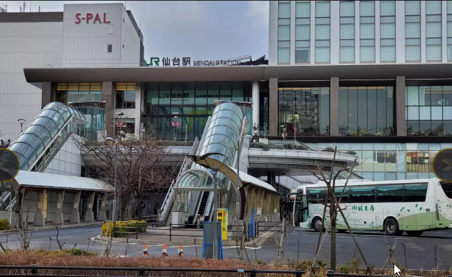
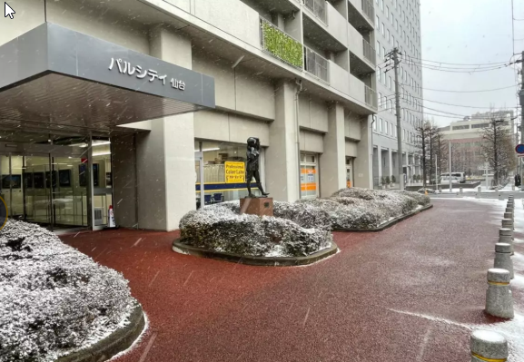
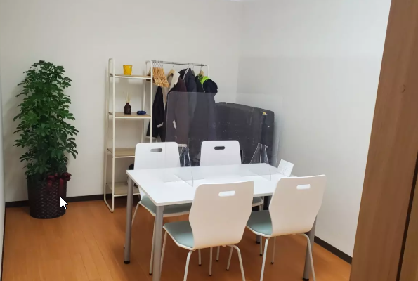

事業所について
リンクワークス仙台駅前では、IT作業と経営作業の２つの柱で
あなたの「働きたい」を応援しています。
私たちが大切にしている価値観
あなたに向いてる、未来の
トビラ。
私たちにできることは、あなたのための明日を、未来を用意すること。それはとてもシンプルなこと。
人によって「やりたいこと」「できること」「向いていること」が違うから、例えば「やりたいことに出会えるまで」「できることが増えるまで」「向いていることが見つかるまで」それをサポートするということ。
世の中にはたくさんの仕事があって、たくさんのトビラがあるのだから、あなたが嬉しいと思える場所や時間、未来につながるトビラだって絶対ある。それを私たちが、一緒に探します。



